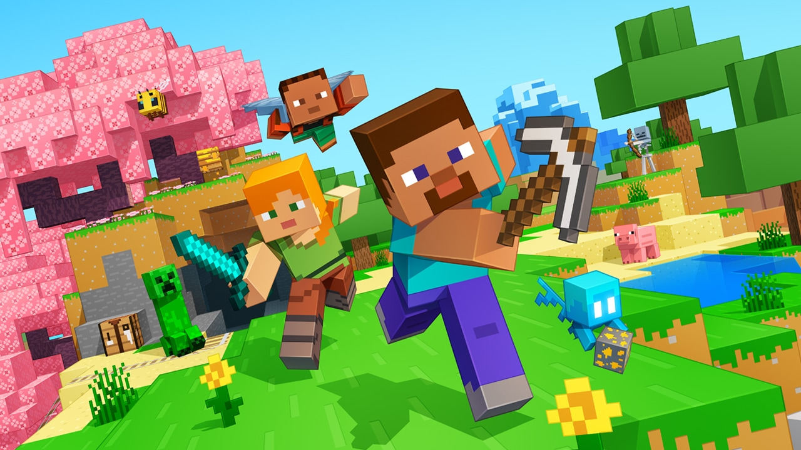

mindcraft was developed by Markus "Notch"persson in 2009
Minecraft is a 2011 sandbox game developed and published by the Swedish video game developer Mojang Studios. Originally created by Markus "Notch" Persson using the Java programming language, the first public alpha build was released on 17 May 2009. The game was continuously developed from then on, receiving a full release on 18 November 2011. Afterwards, Persson left Mojang and gave Jens "Jeb" Bergensten control over development. In the years since its release, it has been ported to several platforms, including smartphones, tablets, and various video game consoles. In 2014, Mojang and the Minecraft intellectual property were purchased by Microsoft for US$2.5 billion. 